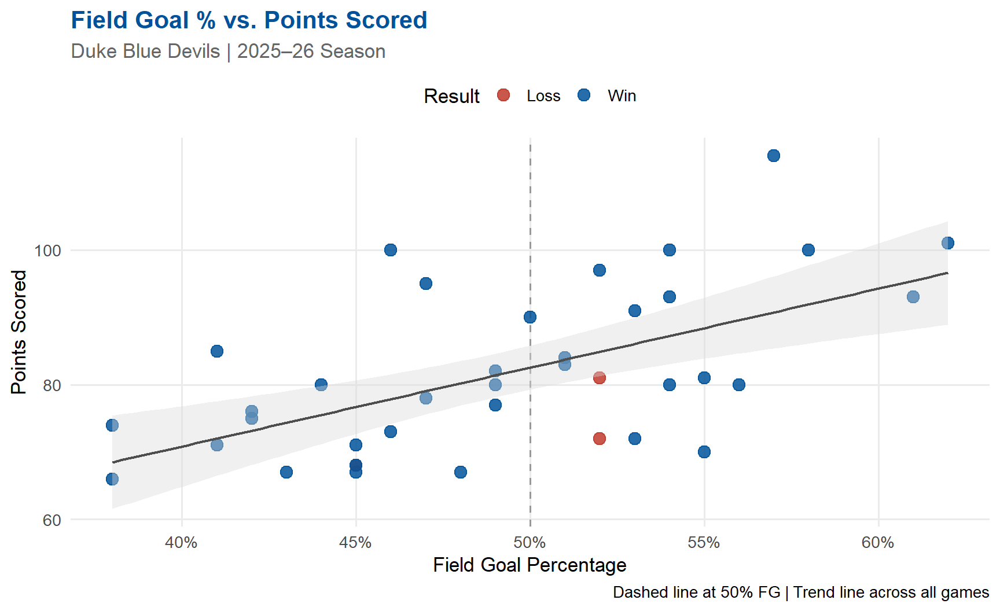
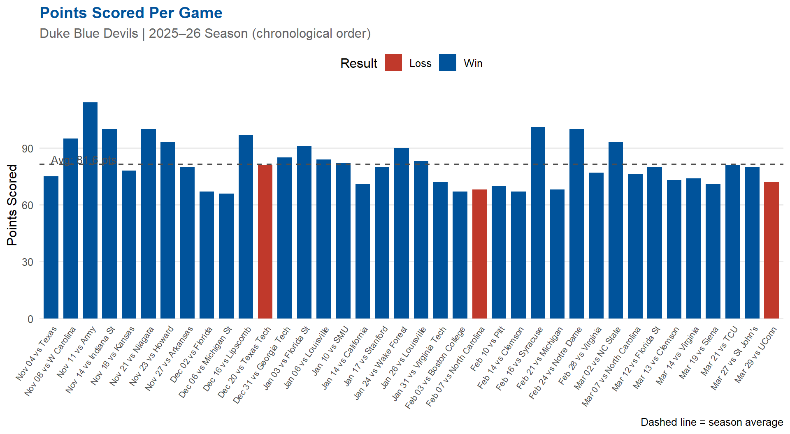
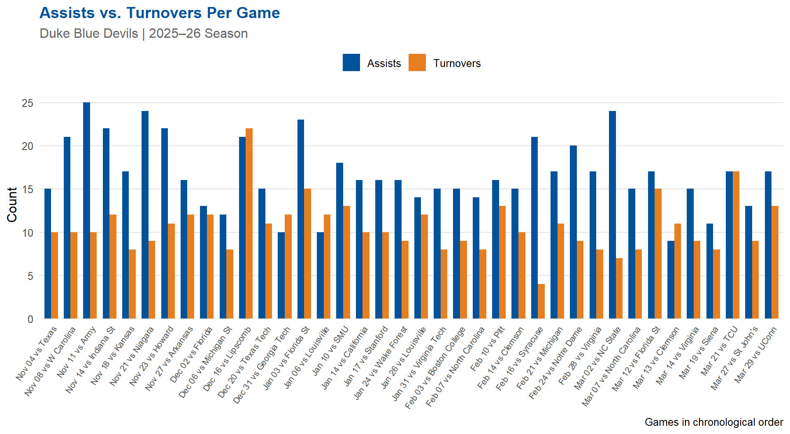
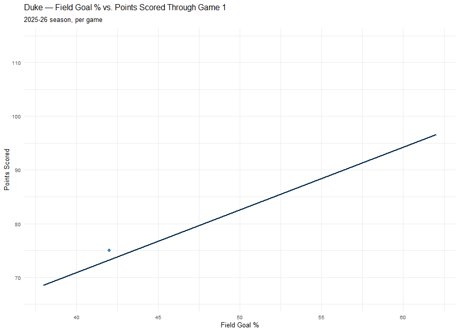

`geom_smooth()` using formula = 'y ~ x'
2025–26 Season Team Statistics
July 30, 2026
See also: Team Season Grade Report — category grades, scoring trend, and a logistic regression look at whether field goal % predicts wins.
Duke finished the 2025–26 regular season as one of the most dominant teams in college basketball. The Blue Devils showcased elite scoring, efficient shooting, and relentless defense throughout the year. Below is a breakdown of their key performance metrics game by game.
Record: 35–3 | Avg Points: 81.6 PPG | FG%: 49.2% | Rebounds: 40.2 RPG | Assists: 16.7 APG | Turnovers: 10.7 TOV
Duke won 35 of their 38 games this season — a 92.1% win rate. The Blue Devils averaged 81.6 points per game while shooting 49.2% from the field, demonstrating an offense that consistently put pressure on opponents.
The scatterplot below examines the relationship between Duke’s field goal percentage and their total points scored. Each point represents a game, colored by outcome. A clear trend emerges: when Duke shoots above 50% from the field, they almost always win.
`geom_smooth()` using formula = 'y ~ x'
Insight: Duke’s most dominant performances came when they shot above 52% from the field. Their two losses both occurred in games where shooting efficiency dipped — a reminder that even elite teams are vulnerable when shots aren’t falling.
Duke’s scoring output across the season tells the story of a team that peaked at the right time. The bars are colored by win (blue) or loss (red), and the dashed line marks the season average.

Insight: Duke scored 100+ points four times this season and never fell below 66 points in a win. Their highest-scoring game was a 114-point performance against Army — a statement game that showcased the full depth of their offensive arsenal.
Ball movement and ball security are two pillars of Duke’s offensive identity. The chart below compares assists to turnovers for each game — a higher assist-to-turnover ratio signals a well-executed offensive game plan.

Insight: Duke consistently recorded more assists than turnovers — a hallmark of disciplined team basketball. Their season assist average of 16.7 APG reflects an unselfish offensive system, while their turnover average of 10.7 TOV stayed well-controlled for a high-tempo team.
The animation below reveals Duke’s field goal % vs. points scored relationship game-by-game across the season, tracing out the same trend line seen in the static scatterplot above.
Rendered separately via generate_animation.R — gganimate’s live PNG device conflicts with knitr’s own graphics device when run inside a chunk, so the GIF is pre-rendered and just embedded here:

Duke’s 2025–26 season was defined by three things: elite shooting efficiency, explosive scoring, and unselfish ball movement. The data paints a picture of a program operating at the highest level:
The Blue Devils’ run through the postseason was a natural extension of regular-season dominance. This data confirms what fans already knew: Duke in 2026 was built differently.